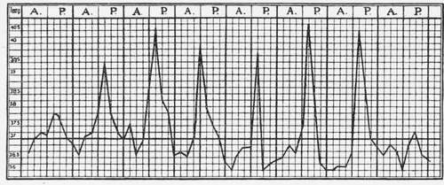

Type Of Fever
Description
This section is from the book "Malaria, Influenza And Dengue", by Julius Mennaberg and O. Leichtenstern. Also available from Amazon: Malaria, influenza and dengue.
Type Of Fever
Corresponding to the parasites causing the fevers, the two types are quotidian and tertian; quartan does not occur.*
* In regard to the relative frequency of the two types in different places, there are but few data. A decision as to whether a certain case is quotidian or tertian is often especially difficult, on account of the irregularity of the fever curve. It appears to depend somewhat on the geographic location as to which of the two types predominates.
Burton Brown observed in Lahore 95 per cent, of quotidian, about 3 per cent, of tertian, and 2 per cent, of other kinds of fever. According to Marchiafava and Bignami, among the Roman estivo autumnal fevers, tertian predominates.
Thayer and Hewetson observed in Baltimore, among 105 cases of estivo autumnal, 38 with intermittent quotidian, 16 with quotidian, showing an inclination to continued, 13 with continued, showing quotidian exacerbations, 6 with tertian, the remainder with either no fever or an undetermined irregular one. Taken altogether, therefore, there were 67 quotidian as compared with 6 tertian.
Among 50 estivo autumnal fevers I observed 18 quotidian, 14 tertian, and 18 irregular, remittent, and undetermined.
These two types are not infrequently observed in an absolutely pure form, so that the fever curve by itself gives no idea as to the character of the infection. More commonly, however, irregularities are found in the course of the temperature, and they are sometimes so marked that a "type" can be recognized only by a more or less forcible interpretation, or not at all.
The principal reasons for the irregular manifestations of these fevers are found in the following facts: 1. The generations of parasites are less uniform than in the fevers of the first group, as a consequence of which sporulation is completed not in the short period of a few hours, but continues to take place for twenty four to thirty six hours. The fever paroxysm is, therefore, prolonged. 2. The evolution of the parasites is not confined within any strict limits, as is the case in the parasites of the first group; on the contrary, there is a marked inclination to hastening of the maturation-in other words, to anticipation. 3. Multiple generations,-although seldom more than two,-as well as mixed infections, are frequent.
When we consider the length of the individual paroxysms, on the one hand, the frequency of multiple generations, on the other, it is readily intelligible why the paroxysms run into one another with the production of continuous fever. The patient is seldom conscious of the individual paroxysms, since they are not ushered in, as in the fevers of the first group, by an unmistakable chill. In fact, it is usually possible to analyze the continued only by frequent taking of the temperature. Moreover, the difficulty is increased by the fact that not every remission can be taken as the close of a paroxysm, for, as we will see, the curve of the simple malignant tertian paroxysm commonly shows a pronounced remission.
It is often difficult and frequently impossible to say if a continued has arisen through prolongation of the paroxysms and anticipation, -and should be designated, therefore, subintrant,-or if an increase of the paroxysms within a given interval had produced a continuity of the fever-in which case it should be regarded as subcontinued.
The blood examination, in cases where the fever curve is not pronounced, may sometimes give the required information; nevertheless, since we are striving after the greatest possible simplification of nomenclature, we should abandon the difference between subintrant and subcontinued as applied to this group, especially as it would require in every single case a personal and not always successful investigation, in order to determine which was present. Marchiafava and Bignami took the trouble, in a series of cases, to parallel the fevercurve with its parasites, and found that the clinical character of a malignant continued is the same whether the continued is subintrant or subcontinued. The differentiation, therefore, is lacking also in practical value.
It is sufficient for us to know that the continued arises: (1) By a prolongation of the paroxysm; (2) by a prolongation and anticipation; (3) by an increase of the paroxysms, as a result of multiple generations of parasites (seldom more than two); (4) by mixed infection.
Change of type occurs more frequently in these than in any other forms of malarial fever, and its range is from intermittent to sub continued and vice versa. In a number of cases the fever begins as an intermittent, quotidian, or tertian. On account of improper treatment, but also in spite of rational therapy, this intermittent becomes remittent or continued. This is sometimes a result of the prolongation and anticipation of paroxysms, but most commonly of the development of a second generation of parasites. Given the opportunity of observing such a case from the beginning, with no pernicious symptoms calling for radical treatment, this transition may be accurately followed, and then the analysis of the fever curve presents relatively few difficulties.
In other cases-and these are the rule-these infections begin with a remittent fever; more than this, in certain tropical fever regions no other primary infection is known. After several days' duration the remittent, usually as a result of the therapy, begins to show an intermittent type. This is due to the fact that if there are two generations of parasites, one is killed or decidedly reduced in virulence by the quinin, and, as a consequence, one series of paroxysms disappears or is evidently modified. The curve is then considerably simplified and the mechanism of infection made clear.
As to the type of malarial fever in India, Fayrer writes as follows: "Quotidian is, no doubt, the most frequent form, but in my experience the day and hour of recurrence are apt to be most irregular; and were it not that the definite types are most distinctly marked in other parts of the world, designations denoting a certain fixed period would scarcely have been adopted in India."*
* Loc. cit., p. 318. [We must remember, however, that up to a few months ago under the heading malarial fever large numbers of eases have been included of what we now know to be due to an entirely different parasite, viz., the so called Leishman-Donovan bodies.-Ed.] quotidian fever.
As already mentioned, this may be absolutely regular. The paroxysms last then six to eight horns, with between them, a completely afebrile interval (Fig. 29). The paroxysms frequently anticipate, with a consequent deviation from the regular type.
Prolongation of the individual paroxysms for sixteen to twenty four hours-a result of the irregular congregation of the generations of parasites-occurs very frequently and changes the intermittent to a remittent or continued. In these cases we speak of a subintrant quotidian. Postponing types also occur, especially in fevers that tend to spontaneous recovery.
Fig. 29.-Quotidian (after Marchiafava and Bignami).
Continue to:
Tags
mosquito, malaria, influenza, dengue, symptoms, outbreaks, diseases, hemoglobinuria, infections